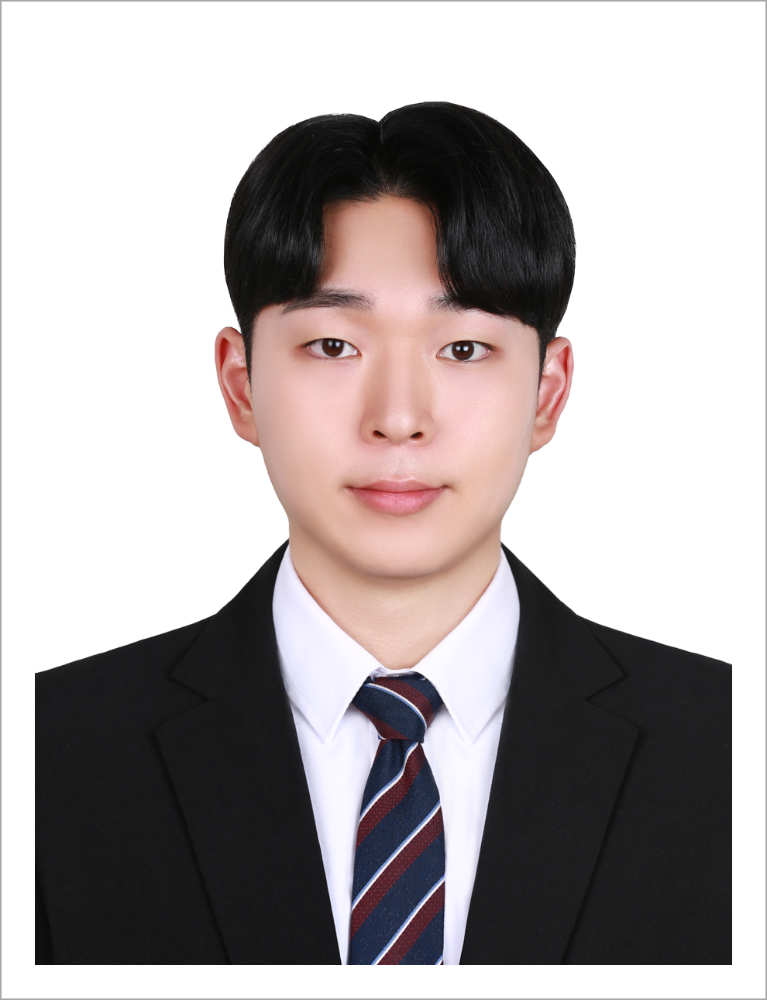
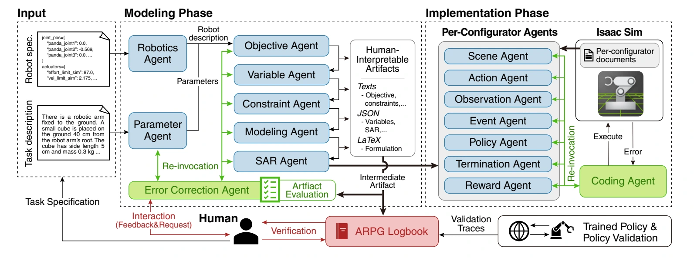
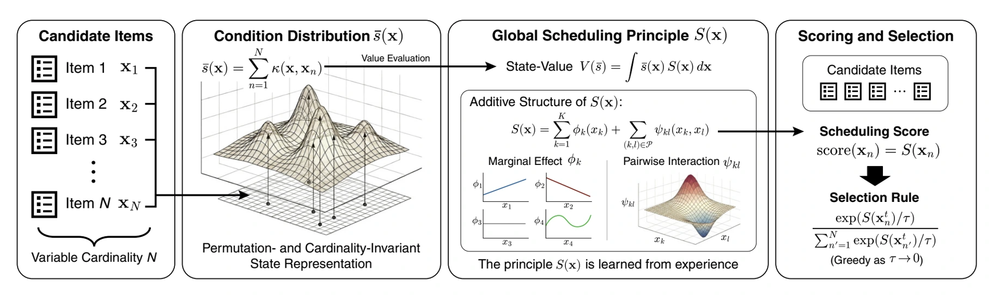
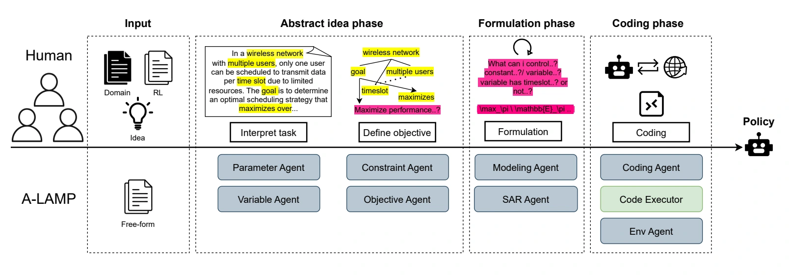
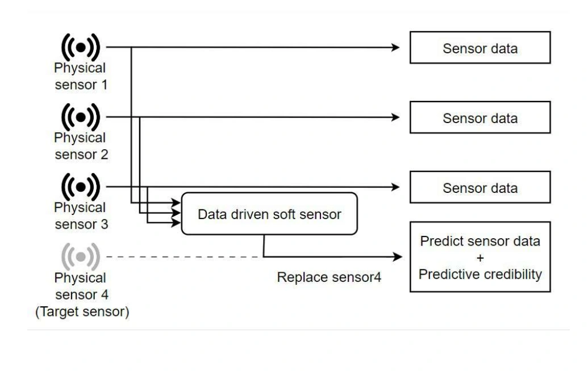
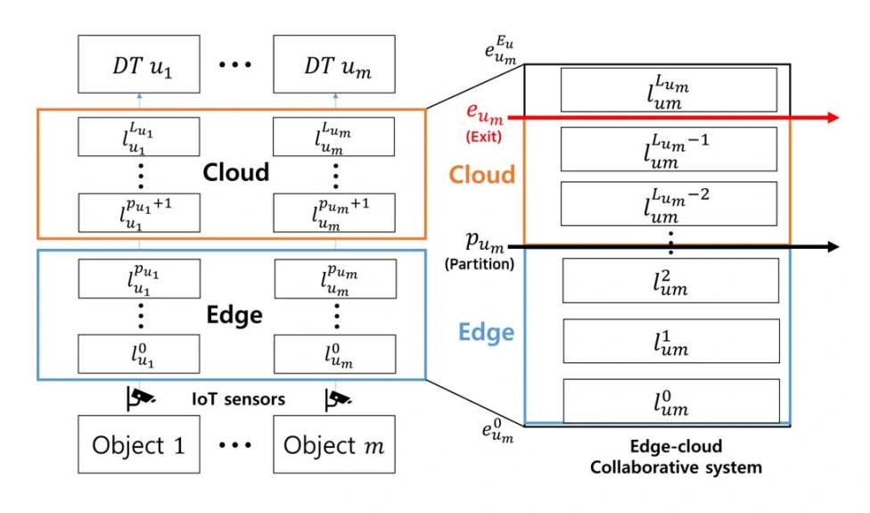
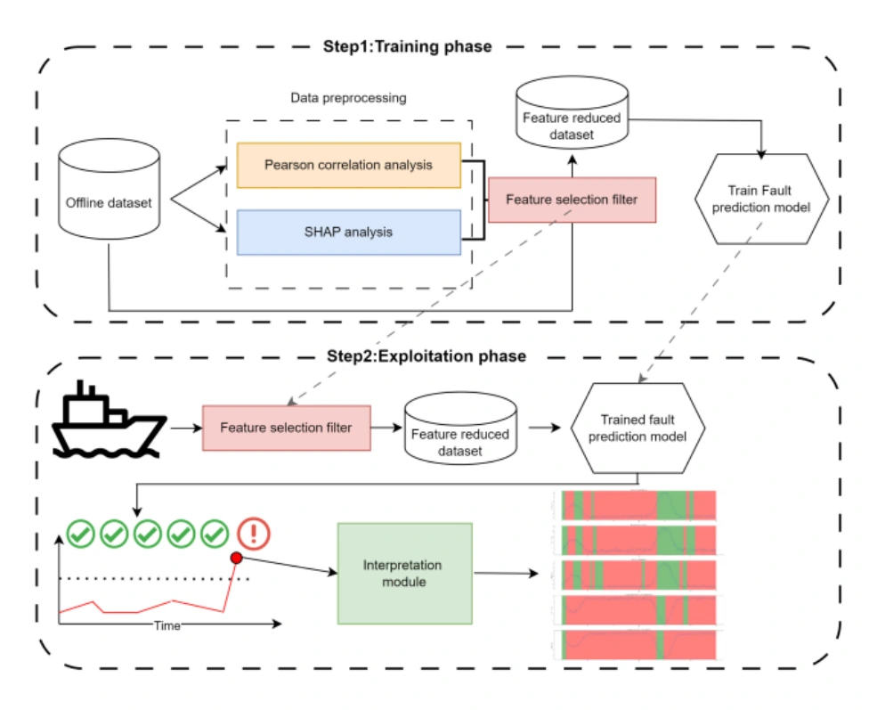
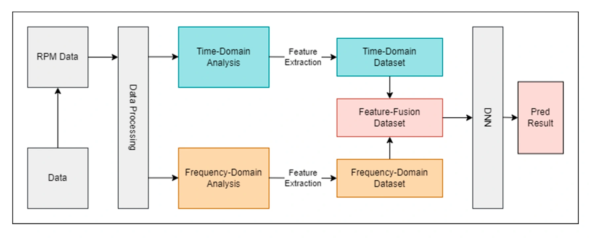
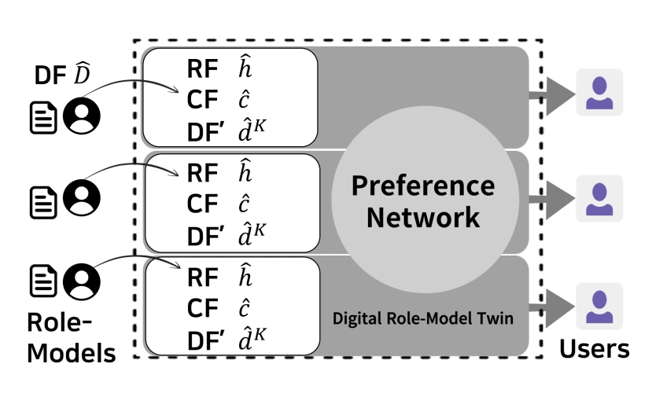

Intelligent decision-making & explainable AI
Hong Je-Gal 제갈홍
Ph.D. Student · Sejong University
I am a second-year Ph.D. student at Sejong University in the Department of Artificial Intelligence and Robotics, and a member of the Machine Intelligence and Networking (MAIN) Lab,
advised by Prof. Hyun-Suk Lee.
I study intelligent decision-making through reinforcement learning and explainable AI. I am broadly interested in understanding how learning-based systems behave and finding ways to improve their decision-making. I believe that advances in AI are blurring the boundaries between fields. I hope to develop AI methods that are easier to understand and more useful in practice across diverse domains.
- Agentic AI
- Reinforcement Learning
- Explainable AI
News
- Our paper “LLMs As MDP Designers” has been accepted to NeurIPS 2026.
- Our paper “Factorized Scheduling Principle” has been accepted to ICML 2026.
- A-LAMP was presented at the NeurIPS 2025 Workshop on Multi-Turn Interactions in Large Language Models.
Publications
Google Scholar ↗2026
2025
- A-LAMP: Agentic LLM-Based Framework for Automated MDP Modeling and Policy GenerationNeurIPS Workshop 2025
2024
A closer look
Explore the papers
Open a paper for its key figure and a one-minute introduction.
Conferences & Workshops 05
2026LLMs As MDP Designers: A Dependency-Aware Agentic Framework for Automated Robot Policy Generation
Conference on Neural Information Processing Systems (NeurIPS), 2026

From a robot task description to a reinforcement learning pipeline that can actually learn.
ARPG uses LLM agents to design the learning problem before deployment. It builds an MDP in dependency order, checks and repairs intermediate decisions, and then implements the simulator through specialized agents. This keeps states, actions, rewards, and termination conditions aligned. Isaac Sim experiments show improvements in modeling correctness, executable environments, and successful policy generation over monolithic LLM and general agent baselines.
Takeaway Reliable robot learning begins with a consistent problem formulation.
2026Factorized Scheduling Principle: Learning Interpretable and Transferable Policies via Structured Additive Functions
International Conference on Machine Learning (ICML), 2026

Learn a scheduling rule once, understand its decisions, and reuse it at different system scales.
FSP represents the candidate population as a condition distribution and learns a global scheduling principle from experience. It decomposes that principle into additive effects of individual features and feature pairs, making their contributions inspectable. At deployment, the learned principle produces a priority score for each candidate. Experiments on synthetic and realistic tasks demonstrate strong scheduling performance and zero-shot transfer across different system sizes.
Takeaway An interpretable priority rule can also be a transferable learned policy.
BibTeX
@inproceedings{jegal2026factorized,
title={Factorized Scheduling Principle: Learning Interpretable and Transferable Policies via Structured Additive Functions},
author={Je-Gal, Hong and Lee, Hyun-Suk},
booktitle={International Conference on Machine Learning},
year={2026},
url={https://openreview.net/forum?id=ImK3lNmGTW}
}2025A-LAMP: Agentic LLM-Based Framework for Automated MDP Modeling and Policy Generation
NeurIPS Workshop on Multi-Turn Interactions in Large Language Models, 2025

Turn a natural-language task into an MDP, an executable environment, and a trained policy.
A-LAMP divides this process among agents responsible for modeling, coding, and execution. Each stage produces artifacts that can be checked, helping preserve the meaning of the original task throughout the pipeline. Across classic control and custom reinforcement learning problems, the framework generates policies more reliably than a single LLM. A lightweight version using smaller models also approaches the performance of much larger models.
Takeaway Explicit modeling stages make automated policy generation easier to inspect and verify.
BibTeX
@article{jegal2025alamp,
title={A-LAMP: Agentic LLM-Based Framework for Automated MDP Modeling and Policy Generation},
author={Je-Gal, Hong and Yi, Chan-Bin and Lee, Hyun-Suk},
journal={arXiv preprint arXiv:2512.11270},
year={2025},
url={https://arxiv.org/abs/2512.11270}
}2024A Novel Data-Driven Soft Sensor in Metaverse Provisioning Predictive Credibility Based on Uncertainty Quantification
IEEE MetaCom · Meta-XP Workshop, pp. 285–290, 2024

A virtual sensor should report how trustworthy its prediction is, as well as the predicted value.
Soft sensors estimate measurements from data, but their reliability can vary with operating conditions. This work adds uncertainty quantification to a soft-sensor architecture so that each prediction is accompanied by a confidence interval. Experiments use scenarios with different levels of predictive uncertainty to evaluate those intervals. The resulting credibility information helps users assess when a prediction is dependable and when it needs more caution.
Takeaway Prediction uncertainty is useful information for operating a digital twin.
2023Efficient Federated Digital Twin Synchronization in Edge-Cloud Collaborative System
IEEE MetaCom · Meta-XP Workshop, pp. 714–719, 2023

Decide where a digital twin’s neural network should run to reduce synchronization time.
A federated digital twin contains multiple twins whose updates depend on neural-network inference. This work partitions each network between an edge device and the cloud and accounts for early exits that can finish inference before all layers run. It formulates the choice of partition points as an optimization problem to minimize expected total synchronization time, and develops an exhaustive partitioning algorithm for finding the optimal choices.
Takeaway The placement of computation and the chance of an early exit need to be considered together.
International Journals 02
2024Time-Series Explanatory Fault Prediction Framework for Marine Main Engine Using Explainable Artificial Intelligence
Journal of Marine Science and Engineering, 12(8), 1296, 2024

Predict an engine fault and show which sensor readings and time periods contributed to the prediction.
This framework combines feature selection, time-series prediction, and explanation for marine main-engine monitoring. Statistical correlation and SHAP analysis help select useful sensor inputs. A prediction model estimates future sensor behavior, while temporal explanations identify influential portions of the input history. Evaluation includes simulated fault conditions in operational sensor data, connecting a predicted warning to evidence that an engineer can inspect.
Takeaway A useful fault warning should explain both what may happen and the evidence behind it.
2023A Novel Time–Frequency Feature Fusion Approach for Robust Fault Detection in a Marine Main Engine
Journal of Marine Science and Engineering, 11(8), 1577, 2023

Keep fault detection reliable even when engine vibration data are sampled less frequently.
Downsampling reduces data volume but can remove information needed for diagnosis. This work combines time-domain statistics with frequency-domain features extracted using EMD–ICA and the Wigner bispectrum. A neural network then classifies engine conditions using the fused features. In the study’s experiments, the combined representation outperforms either domain alone and retains 96.3% accuracy at a 100× downsampling rate.
Takeaway Complementary time and frequency features preserve diagnostic information under reduced sampling.
Domestic Journals 01
2023Digital Role-Model Twin Using Reinforcement Learning Model
The Journal of Korean Institute of Communications and Information Sciences, 48(2), 282–293, 2023

Learn how a role model makes decisions, then let others explore those preferences in their own context.
The proposed digital twin learns from a target person’s choices in decision-making tasks. Reinforcement learning combines contextual information, role-model features, and a preference network to estimate which actions that person would favor. Users can then query the learned model with new decision problems and contextual information. Experiments examine how well the twin learns and reproduces the target person’s preferences.
Takeaway A digital twin can represent decision preferences as well as physical behavior.
Background
Education
- Mar 2025 – Present
- Ph.D. Student, Artificial Intelligence and RoboticsSejong University · MAIN Lab
- Mar 2023 – Feb 2025
- M.S., Intelligent Mechatronics EngineeringSejong University
- Mar 2017 – Feb 2023
- B.S., Intelligent Mechatronics EngineeringSejong University
Research & Project Experience
- Jan – Dec 2024
- Video prediction explanations for autonomous twinsGovernment-funded research project
Developed methods for identifying important spatial regions and time frames in video predictions, supporting essential-information extraction for communication between autonomous twins.
- Jan – Dec 2023
- Explainable marine engine fault predictionIndustry-academic collaboration · Hanwha Ocean
Led feature preprocessing and prediction-explanation work, combining statistical analysis with XAI to identify sensor- and time-specific contributions to fault predictions.
- Sep 2021 – Apr 2022
- Time–frequency feature fusion for marine engine diagnosisIndustry-academic collaboration · Hanwha Ocean
Developed data preprocessing that combines time- and frequency-domain features to preserve diagnostic information under reduced sampling rates.
- Mar – Jun 2022
- Personalized news recommendation serviceCapstone team project · Backend development
Integrated a reinforcement-learning recommender, news collection, and a KakaoTalk chatbot in a cloud-based service.